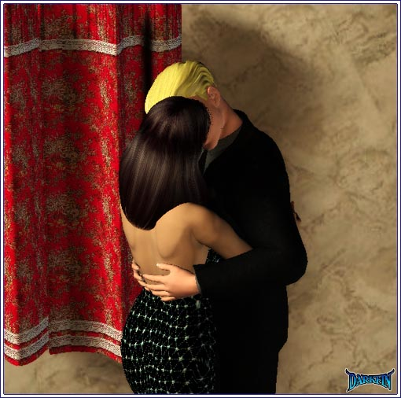
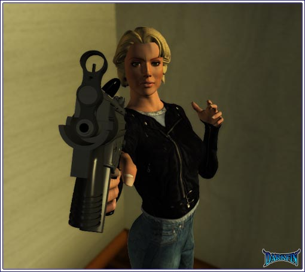
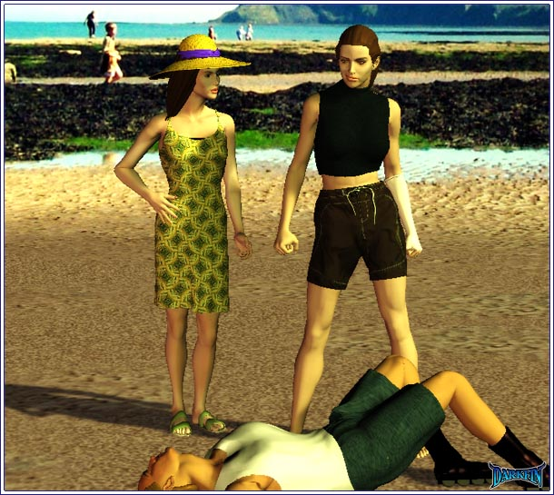

Ona Rosa (Rubbing his shoulder) You know, KJ, you should lie down and get some rest
KJ Can't... I cannot even try to sleep right now
Ona Rosa No one is talking about sleep
KJ I need to be here for my mom
Ona Rosa Joe is helping her and I'll do anything she asks
KJ Thank you, Oni
Ona Rosa (Suddenly stepping away) Um... I was watching the news
KJ I suppose they're looking for an official family statement about dad?
Ona Rosa Um... yes - but I was watching it for Morrigan
KJ DID THEY FIND HER?
Ona Rosa No... not yet
KJ (Slamming his fist against the wall) GOD DAMMIT - this is all just too insane - my girlfriend is being hunted by cops, my father...
Ona Rosa (Handing him a tissue) I know
KJ Oh, and judging by the broken dishes and crooked pictures in the house, we had a nice little quake to go along with everything else
Ona Rosa It only caused minor damage
KJ And your sister... dear God, she nearly died in a helicopter crash!
Ona Rosa 'Nita is strong - it will take a lot more than that to bring her down
KJ Why are you here?
Ona Rosa What?
KJ Why are you here with me instead of at home with your family... your kids... Javier?
KJ It means everything that you wanted to be here with me
Ona Rosa (Trying to avoid eye contact) I just wanted to help
KJ You are

Ona Rosa (Pulling back) No...
KJ But...
Ona Rosa My children need me... I've got to go
KJ Oni, wait!
KJ WATCH IT, MAN
Griffin GET IN THE CAR, KJ
KJ I can't leave mom at a time like this
Griffin (Watching Ona Rosa take off) Looks like you were about to do just that
KJ Where are we going?
Griffin To work
KJ Are you serious? - I have to stay here and...
Griffin And what? - stand around and mourn? - I really am sorry about your father but the time for being your own man begins right now
KJ You should talk
Griffin Hey, I am the only one looking out for ALL of our interests - do you see your sister around?
KJ She's not back with your mom yet?
Griffin I don't know where they went, besides, that's the least of our concerns - we have a critical PCOC board meeting and YOU need to be there
KJ Dude, that's always been your call - why do you need me there?
Griffin Because your father had a say in it as well - remember, "Meeramar" as in "von Meer" AND "Martel"... or, you could just sell us your family's half of the company and we'll gladly change it to "Martel Shipping"
KJ Old Doug would just love that, wouldn't he?
Griffin Yes, my father certainly would - I'm sure that's his primary goal right now
KJ Then why are you trying to help us?
KJ (Shaking his head) Look, I don't want to be some fucking chess piece between your hatred for your dad and your love for my sister
Griffin This isn't about them - it's about having allies I can trust to back me up when the time comes
KJ What the hell are you talking about? - what time? - you make it sound like we're going to war
Griffin That's what business is - you're a lawyer, you should know this!
KJ Ugh... I am sorry, I'm trying to deal with all different emotions right now, I can't think straight
Griffin YOU NEED TO DO SO - granted, I am the one being groomed to take over the business, and rightfully so, but I want you to be the one representing the von Meers
KJ My sister is better for this - dad thought so and I thought you did too?
Griffin She is a scientist, first and foremost - she sees things in black and white - all environmental issues wouldn't stand a chance against her
KJ Oh, I see - I'm just some dumbass meat puppet you can easily control to help you rape nature, is that it?
Griffin THAT IS NOT IT AT ALL - YOU ARE MISSING THE POINT - your background in law allows you to see all possibilities, we are going to need that in the months ahead
KJ WHAT IS THIS BIG THING THAT'S HAPPENING?
Griffin You're about to find out, my friend
KJ I'm not sure I'm up to this
Griffin Your sister isn't here - your father is dead - your mother... please - do you want to call in your cousins from back east to take over?
KJ No
Griffin A real man shines greatest in moments of true adversity - you have your father's name... don't you think it's time you lived up to it?
KJ (Swallowing hard as he looks around) I take it this isn't a meeting about switching from winter to summer blends of gas?
Morrigan I... I don't understand - what's going on with your dad?
Erika Someone tried to poison him
Morrigan Who?
Erika I have every intention of finding out
Morrigan Why did you bring him here?
Erika It was the only safe place Stephanie and I could think of
Morrigan How did Hector Tapia become involved?
Erika Are the "when" and "where" questions next?
Morrigan I'm sorry
Erika You never stop being a reporter, do you?
Morrigan Do you ever stop being a scientist?
Erika (Looking away) On occasion
Morrigan Well, you'll have to show me sometime
Morrigan Does KJ know he's alive?
Erika No... and neither does my mother - they can't
Morrigan You can't even trust your own family?
Erika The less people who know means whoever did this can't try it again
Morrigan The anguish they must be going through!
Erika My father is still very critical - I don't want them to go through his death twice
Erika (Noticing Morrigan's bandage) What happened to your foot?
Morrigan Just a cut
Erika Let me see
Morrigan (Backing away) IT'S FINE
Erika I don't want it to get infected
Morrigan Am... a friend took care of it - I need to leave
Erika Where are you going to go?
Morrigan I don't know, but I can't stay here and risk the police finding me AND your father
Erika We're going to put him in a suite here - Joe will keep quiet, no one will know
Morrigan That's great but...
Erika We can put you in an adjoining suite - you can look after him for us!
Morrigan I don't know
Erika No, this is perfect - Steph needs to go back to work, Hector wants out ASAP, Joe can't watch him every second and it will give me a chance to find out what's going on
Morrigan Are you sure?
Erika Knowing exactly where both of you are and that you're safe will be a huge comfort to me
Erika On behalf of my brother
Morrigan Of course
Erika Steph and I will show you what to do - you simply stay in the room, Joe will take care of everything until we figure out what the next move is
Morrigan You know, just in case you missed the APB, I am wanted for murder - you're still willing to trust me with your dad?
Erika I know you didn't kill that priest - I couldn't have asked for a better person to take care of my father right now
Morrigan Thank you... that means a lot
Erika I'm just stating the obvious
Morrigan I... have a friend that's helping me - I wonder if she'll she be able to find me?
Erika Don't worry, I'm sure she will

Justine JESUS, JOIE
Joenne (Putting down the weapon) Thank God it's you!
Justine DO YOU MIND TELLING ME WHAT IN THE WORLD IS GOING ON?
Joenne No time... help me pack
Justine PACK?
Joenne (Throwing stuff in boxes) I've seen too much, I need to go
Justine Go where? - I have been looking for you all night and day - Zach has been searching for Gracie - do you know where she is? - how exactly are you involved with Morrigan's mess?
Joenne McBride is just an aspect to it - I can't tell you anymore right now
Justine (Wagging her finger) You BETTER tell me more because this is complete bullsh...
Joenne (Covering her mouth) You are my sister and I love you - I know how much you want to be married with children someday, that's why I want you to be safe - and why I have to leave at once
Justine It's too late for that - I know all about the creature known as "Father Greg"
Joenne What are you talking about?
Justine A-HA... I'll tell you my story IF you tell me yours!
Joenne This is NOT a game, Justi!
Justine Seems like a VERY big game to me - you can start off by explaining why a temp secretary like you possesses a massive assault weapon?
Joenne (Pulling her sister) WE'VE GOT TO GET OUT OF HERE, NOW
Marcy So, Tamarah calls me up the other day - she's a make-up artist whose brother I helped get a crew job on Sig7 - we've all been friends for years...
Anita That's nice
Marcy Anyway, she keeps me on the phone for TWO hours complaining about how she can't find a decent man
Anita (Scuffing her sandals) Uh-huh
Marcy I'm like DUH - get the hell out of LA and what does she do? - Anita, are you listening?
Anita Listening, yes - caring, no
Marcy Well, TRY... for my sake
Anita OK, what does she do?
Marcy SHE MOVES TO FREAKING NEW YORK CITY
Anita (Shrugging her shoulders) And?
Marcy AND? - COME ON, the only thing men in both LA and NYC care about are who they can screw in business and in the bedroom
Anita And this comes from personal knowledge?
Marcy It's like sand on asphalt - it looks secure but when you go to step on it, you end up flat on your ass
Anita With your legs spread wide open?
Marcy Stop it
Anita Funny... you have yet to sign my cast
Marcy (Winking) I gave you my personal autograph elsewhere
Guy WOOOOO - BOGREE IS A HUMAN HOTTIE
Marcy Thank you! - now, where was I... OH, so I tell Tamarah that the only people these men are capable of loving are themselves - if she wants the Holly Hobbie Good Housekeeping life, I told her to try some mid-western shit state like Duluth
Anita Duluth is a city, not a state
Marcy You seem very uppity today, why?
Anita Nothing more sex wouldn't cure
Guy (Singing) LIFE'S LITTLE LESSONS - I HAVE A FEW LESSONS I'D LIKE TO TEACH YOU, JAAAMIEEE
Anita SON OF A...
Marcy Just ignore him, it's par for the course - we'll take care of the sex part later, why don't you try talking to me about what's going on with you instead hiding behind this passive aggressive behavior?
Anita FINE - I get blown out of the sky last night and a mermaid saves me from an evil band of hooded terrorists - HAPPY NOW?
Marcy WOW - what pharmaceutical are you flipped on?
Anita Why, want some?
Marcy You know about my past - that's an extremely low shot, even for you!
Anita Sorry... I'm really tired - tired of trying to fight something I don't understand - tired of me and my CO getting suspended for something we had no control over - tired of my loco family and the drama that goes with them - tired of trying to separate myth from reality - tired of fucking you for hours and then helping you pick out new swim trunks for Ned - I'm tired of your het privilege while I'm the one who endures the hate taunts - I'm tired of the chunks of cookie dough in this ice cream...
Anita (Grabbing her wrist) And I am REALLY tired of him!
